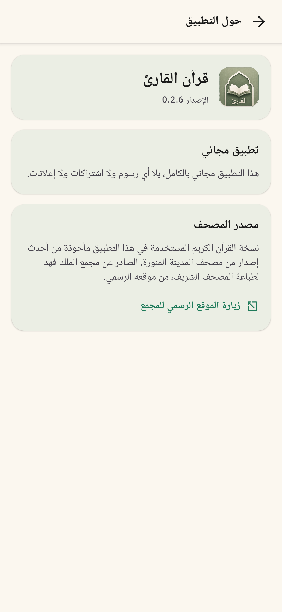
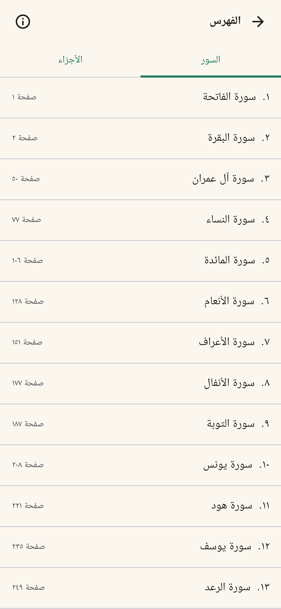
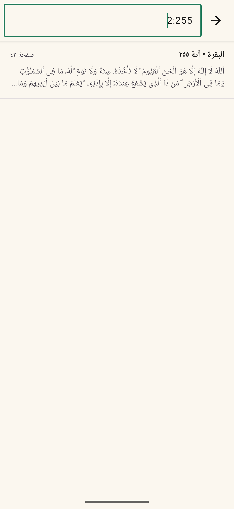
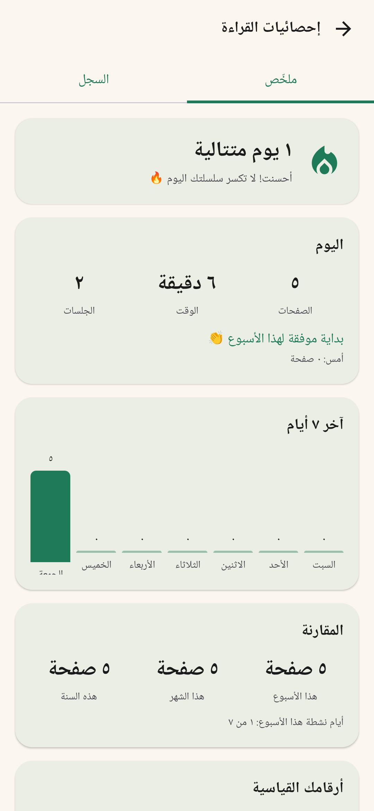

صفحة مصحف تفاعلية
اضغط الآية لتحديدها عبر أسطرها، ثم انسخ النص أو شاركه أو احفظ موضعه.
مفتوح المصدر · يعمل دون إنترنت
مصحف أندرويد يضع صفحة القراءة أولًا؛ بلا إعلانات ولا حسابات ولا تتبّع، مع أدوات تساعدك على البحث وحفظ الموضع ومتابعة الورد والختمة.
الفكرة
كل تفصيلة في الواجهة صُممت لتقلّل المشتتات: تنقّل طبيعي باتجاه المصحف، تظليل دقيق للآية، ووصول سريع للأدوات عند الحاجة فقط.
ما الذي يقدمه؟
اضغط الآية لتحديدها عبر أسطرها، ثم انسخ النص أو شاركه أو احفظ موضعه.
ابحث بالنص أو السورة من غير حساسية للتشكيل، أو انتقل بمفتاح مثل 2:255.
وضع ليلي، ملء الشاشة، تمرير أفقي أو عمودي، ورأس قابل للتخصيص.
إحصائيات الجلسات وسلسلة الأيام وخريطة الصفحات وسجل الختمات، كلها على جهازك.
لا إذن إنترنت، لا تسجيل دخول، لا تحليلات، ولا إعلانات. بيانات القراءة لا تغادر الجهاز.
اقرأ السياسة كاملةداخل التطبيق
واجهة عربية أصلية تحترم اتجاه القراءة، مع طبقات بصرية هادئة مستوحاة من الورق والحبر.




لقطات توضيحية؛ قد تتغير بعض التفاصيل في أحدث إصدار.
مشروع للجميع
الشفرة متاحة برخصة MIT، مع بناء آلي وقوالب واضحة للمساهمة. نرحب بتحسينات الوصول والاختبارات والأداء وتجربة القراءة.